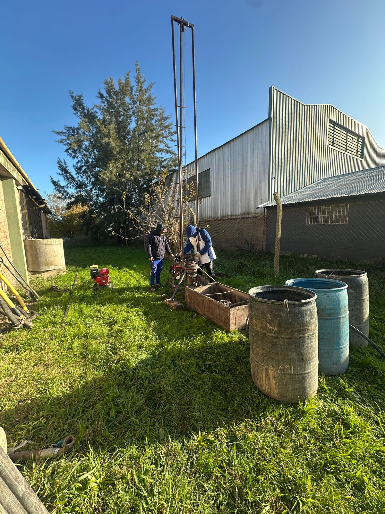

Quiénes Somos
Conoce más sobre RC Perforaciones de Agua, una empresa dedicada a la perforación de pozos de agua en Quilmes, Argentina. Descubre nuestra historia, misión y valores.
Nos especializamos en brindar soluciones de agua confiables para hogares, campos y comercios, utilizando maquinaria especializada y materiales de primera calidad.
- Perforaciones de 1° y 2° acuífero (Puelche)
- Limpieza y rehabilitación de perforaciones
- Venta de materiales: caños, piezas plasticas y accesorios
- Asesoramiento técnico personalizado
